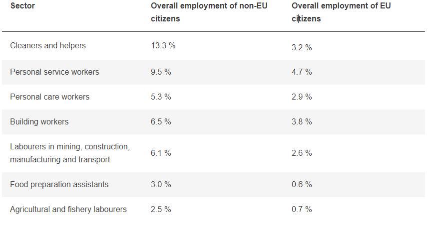

Employement of immigrants
In 2019, 8.8 million non-EU citizens were employed in the EU labour market, out of 191.5 million persons aged from 20 to 64, corresponding to 4.6% of the total. The average employment rate in the working-age population is higher for EU citizens (73.8%), than for non-EU citizens (60%) in 2019.
In 2019, non-EU citizens were over-represented in some specific economic sectors such as:
On the other hand, non-EU citizens were under-represented among: